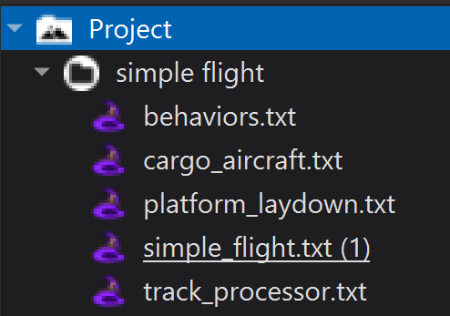

Behaviors and Behavior Trees¶
The Behavior Tree is an artificial intelligence technology that allows the user to quickly create flexible agents with various tactical modules, called “behaviors” or “behavior nodes”. The nodes can be arranged together in diverse and interrelated ways with connector nodes to define behavior.
Quick Start¶
A behavior may be defined as follows:
behavior report
precondition
return true;
end_precondition
execute
WsfPlatform plat = PLATFORM;
writeln(plat.Name(), " Report: Status - OK");
end_execute
end_behavior
The report behavior may be implemented in a task processor behavior tree as follows:
processor TASK_MANAGER WSF_TASK_PROCESSOR
update_interval 10 sec
behavior_tree
selector
behavior_node report
end_selector
end_behavior_tree
end_processor
Any platform or platform type that implements this processor will report the OK status message to the console and simulation log. The behavior will be selected only if the precondition returns true - a selector will check the preconditions of each behavior_node in order and execute only the first behavior with a precondition returning true. Alternative behavior control mechanisms include sequence, parallel, priority_selector, and weighted_random. These can be used in combination and in series to create arbitrarily complex behavior trees.
Closer Look¶
Note
The following steps assume that the “simple_flight” scenario is present as discussed in Processors.
Adding Behaviors¶
To add behaviors to the simple_flight scenario, perform the following steps:
Create a new text file, named behaviors.txt in the simple_flight directory.
Add the following code line to track_processor.txt:
include_once behaviors.txt
The behaviors implemented in the following steps make use of aux_data, an AFSIM command that may be used to define custom variables with a specific platform or platform type for use in any number of applications. For the behaviors to work correctly, the following aux_data command block must be added to the platform type definition of CARGO_AIRCRAFT:
aux_data struct CARGO_AUX_DATA bool collisionExpected = false bool offRoute = false double lastKnownDistance = -1 end_struct end_aux_data
Additionally, a climb rate limit should be added to the mover definition on same platform type. This will ensure the aircraft change pitch within reason of what is possible. Update the CARGO_AIRCRAFT mover definition to reflect the following:
mover WSF_AIR_MOVER update_interval 3 sec maximum_flight_path_angle 10 deg end_mover
Open behaviors.txt.
Add the following behavior blocks to behaviors.txt:
The behavior defined below will be the default behavior of the cargo aircraft - executed when no tracks are detected by the platform’s AIR_RADAR.
behavior report_all_clear precondition WsfLocalTrackList trackList = PLATFORM.TrackList("track_proc"); return trackList.Empty(); end_precondition execute WsfPlatform plat = PLATFORM; writeln(plat.Name(), " Report: All Clear"); if (plat.AuxDataBool("offRoute")) { plat.ReturnToRoute(); writeln("\t - Returning to route\n"); plat.SetAuxData("offRoute", false); } end_execute end_behavior
The next behavior will only execute when a track is detected by the AIR_RADAR on either platform. During execution, it checks if the track indicates the presence of a platform on a collision course. It determines whether or not a collision is likely to occur by comparing the tracks latitude and altitude with its own, then determines over time, using aux data, whether or not the track is getting closer. If they are at the same latitude, and altitude, and they are getting closer, the task processor generates a warning - a collision is expected, and provides that information to the platform aux data.
behavior report_entity_detected precondition WsfLocalTrackList trackList = PLATFORM.TrackList("track_proc"); return !trackList.Empty(); end_precondition execute WsfPlatform plat = PLATFORM; writeln(plat.Name(), " Report: Entity Detected"); WsfLocalTrackList trackList = plat.TrackList("track_proc"); foreach (WsfTrack t in trackList) { if (plat.Altitude() == t.Altitude()) { double lastDist = plat.AuxDataDouble("lastKnownDistance"); double currDist = plat.GroundRangeTo(t.CurrentLocation()); if (lastDist == -1 || lastDist > currDist) { plat.SetAuxData("lastKnownDistance", currDist); writeln("\t - WARNING: Collision Expected!\n"); plat.SetAuxData("collisionExpected", true); } } } end_execute end_behaviorThe third and final behavior executes only after the platform is known to be on a collision course. When this behavior executes, the platform instructs itself to randomly alter its altitude within a limited range. After changing altitude, the system returns to normal and maintains this altitude until the track is no longer detected, at which point, it returns to the assigned route.
behavior reroute precondition WsfPlatform plat = PLATFORM; bool collisionExpected = PLATFORM.AuxDataBool("collisionExpected"); if (collisionExpected) { writeln(plat.Name(), " Report: Rerouting..."); } return collisionExpected; end_precondition execute WsfPlatform plat = PLATFORM; double altDelta = 100 * Math.Ceil(RANDOM.Uniform(0, 30) - 20); plat.GoToAltitude(plat.Altitude() + altDelta); writeln("\t - New Target Altitude = ", plat.Altitude() + altDelta, "m\n"); plat.SetAuxData("collisionExpected", false); plat.SetAuxData("offRoute", true); end_execute end_behavior
Adding a Behavior Tree¶
The order of these behaviors is critical to their correct execution.
A behavior tree may be implemented in the CARGO_TASK_MANAGER processor definition block as follows:
behavior_tree selector behavior_node report_all_clear behavior_node reroute behavior_node report_entity_detected end_selector end_behavior_tree
With these additions, the cargo aircraft are now capable of autonomously routing around one another. Simulate simple_flight in Warlock.
Advance to time 1000 sec (just before the aircraft are close enough to detect one another).
Observe the messages reported to the console output as the platforms determine a course of action independently. Compare this to their altered flight paths.
The flight paths should reflect something similar to the following:
Review¶
With the increasing size of the scenario, it is no longer practical to provide the full version of every file that was changed in this module. The full versions will be available within demos/simple_flight if needed for reference.
In this module, a new file behaviors.txt was added to the simple_flight scenario, and additions were made to cargo_aircraft.txt and track_processor.txt.
{kind=link}
track_processor.txt |
# track_processor.txt
# A component of the simple_flight demo
include_once behaviors.txt
processor TRACK_MANAGER WSF_TRACK_PROCESSOR
master_track_processor
purge_interval 10 sec
report_interval 3 sec
end_processor
processor CARGO_TASK_MANAGER WSF_TASK_PROCESSOR
update_interval 10 sec
behavior_tree
selector
behavior_node report_all_clear
behavior_node reroute
behavior_node report_entity_detected
end_selector
end_behavior_tree
end_processor
|
cargo_aircraft.txt (platform type) |
# cargo_aircraft.txt
# A component of the simple_flight demo
include_once track_processor.txt
...
platform_type CARGO_AIRCRAFT WSF_PLATFORM
icon c130
spatial_domain air
category cargo
mover WSF_AIR_MOVER
update_interval 3 sec
maximum_flight_path_angle 10 deg
end_mover
radar_signature CARGO_AIRCRAFT_RADAR_SIG
add sensor cargo_radar AIR_RADAR
internal_link track_proc
end_sensor
add processor track_proc TRACK_MANAGER
internal_link task_mgr
end_processor
add processor task_mgr CARGO_TASK_MANAGER
end_processor
aux_data
struct CARGO_AUX_DATA
bool collisionExpected = false
bool offRoute = false
double lastKnownDistance = -1
end_struct
end_aux_data
end_platform_type
|
Summary¶
Behaviors offer a small fractional view of the advanced capability offered through AFSIM. With these additions, any number of platforms may be automated to behave independently based on what they perceive directly. AFSIM’s capability is expanded further when behaviors and processors are connected with communications devices.